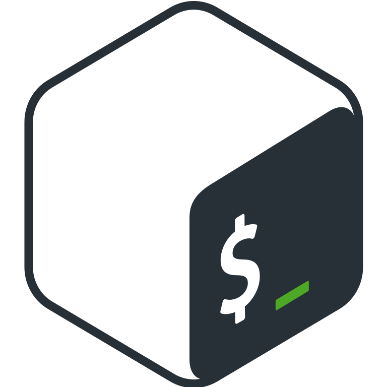
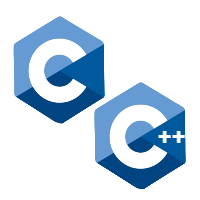
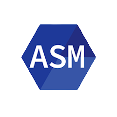
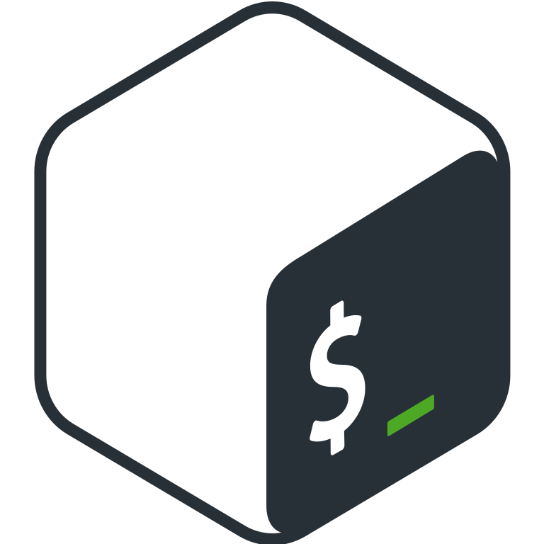
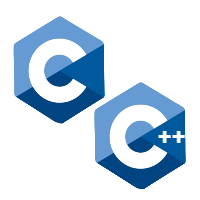
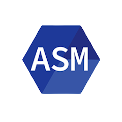

Qui suis-je ❔
Premièrement,
Moi :
J'habite à Strasbourg, dans l'Est de la France.
Je suis en Deuxième année à Epitech, une école supérieure d'informatique.
J'aime tout ce qui touche à la linguistique, aux sciences du langage et à la communication.
L'informatique :
2020 : Etant passionné par l'informatique depuis toujours et ayant
grandi avec, il m’apparaît aujourd’hui comme une évidence de faire des études dans ce
domaine. J'ai commencé la programmation l'année il y a 2 ans, toutes mes connaissances ont
été acquises en
autodidacte.
J'ai commencé à apprendre l'HTML et le CSS. C'est un étudiant actuellement en première
année à l'ESGI qui m'y a initié. D'autres pars j'ai suivi les cours en ligne (Open Classroom) de Mathieu Nebra (Auteur et Développeur).
2021 : J'ai commencé le langage Python, suivi plusieurs formations comme celles de Graven, ainsi que quelques cours Udemy et
et des projets sur Github et StackOverflow.
J'ai appris le langage utilisé par le Microsoft Disk Operating System,
Batch, et la ligne de commande Unix (Bash), où j'ai quelques connaissances.
2022 : J'ai commencé la programmation en langage C, j'en maitrise les bases avancées. Cela m'a permis d'en apprendre plus sur l'ordinateur et le fonctionnement de la mémoire.
J'ai aussi des notions en ASM, par exemple les Syscalls (appels systèmes).
En novembre, j'ai commencé le C++.
Enfin, j'adore les CTF, j'aime passer mon temps sur RootMe et j'ai récemment commencé à faire des machines sur HackTheBox & TryHackMe.
 




